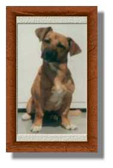
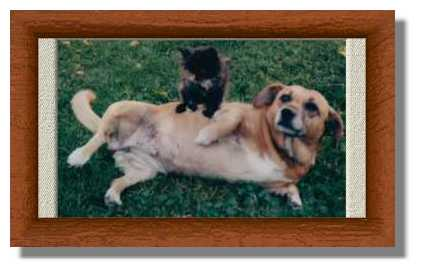

La page de Toutou
Une page à la mémoire de mon seul et unique chien, Toutou (26 novembre 1986 - 1er septembre 1999).
| Voici Toutou. Elle a douze ans : c'est le vieux chien de la famille. Sur cette photo (une des rares où elle n'a pas l'air piteuse), elle est encore un chiot en pleine crise d'adolescence. Dans le temps, on l'appelait encore Chips, mais elle a changé de nom en cours de route. |  |
 |
Ici, Toutou est en train d'accomplir sa B.A. de l'année, c'est-à-dire tenir la petite chatte Dali sur son ventre. Avec le temps, le pauvre Toutou a dû s'effacer derrière les chats dont la présence devenait de plus en plus envahissante. |